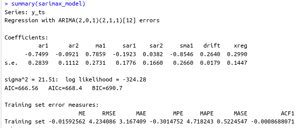

The model we run is this
library(forecast)
library(ggplot2)
# Create sample data
set.seed(123)
n <- 120
time <- 1:n
# Main time series with trend + seasonality
y <- 50 + 0.3*time + 10*sin(2*pi*time/12) + rnorm(n, 0, 5)
# External variable (e.g., marketing spend)
x1 <- 20 + 0.1*time + rnorm(n, 0, 3)
# Convert to time series object
y_ts <- ts(y, frequency = 12)
x1_ts <- ts(x1, frequency = 12)
# Let R find optimal parameters
sarimax_model <- auto.arima(y_ts,
seasonal = TRUE,
stepwise = TRUE,
approximation = TRUE,
xreg = x1_ts)
summary(sarimax_model)Now the output we get is

Interpretation
Here’s a comprehensive interpretation of our SARIMAX model output:
Model Structure
SARIMAX(2,0,1)(2,1,1)[12] with external regressor
- Non-seasonal part: AR(2) + MA(1)
- Seasonal part: Seasonal AR(2) + Seasonal MA(1) with seasonal differencing (D=1)
- Seasonality: 12 months (monthly data)
- External regressor: One predictor variable (
xreg)
Coefficients Interpretation
Non-seasonal Components:
- AR(1) = -0.75: Strong negative autoregressive effect - high values tend to be followed by low values
- AR(2) = -0.09: Weak negative second-order autoregressive effect
- MA(1) = 0.79: Strong moving average effect - shocks persist for one period
Seasonal Components (12-month cycle):
- SAR(1) = -0.19: Moderate negative seasonal autoregressive effect
- SAR(2) = 0.04: Very weak positive seasonal effect
- SMA(1) = -0.85: Strong negative seasonal moving average - seasonal shocks reverse quickly
External Effects:
- Drift = 0.26: Positive trend component (0.26 units increase per period)
- xreg = 0.30: External variable has positive effect - 1 unit increase in xreg predicts 0.30 unit increase in y
Model Quality Assessment
Statistical Significance:
- Significant coefficients: AR(1), MA(1), SMA(1), Drift (coefficient > 2× standard error)
- Borderline: xreg (2.07× SE), SAR(1) (1.08× SE)
- Insignificant: AR(2), SAR(2) (coefficient < SE)
Model Fit Statistics:
- AIC = 666.56, BIC = 690.7: Good for model comparison (lower is better)
- Log-likelihood = -324.28: Baseline for model comparison
- σ² = 21.51: Error variance
Forecast Accuracy:
- RMSE = 4.23: Average forecast error magnitude
- MAE = 3.17: Average absolute error
- MAPE = 4.72%: Excellent accuracy (error <5% of actual values)
- MASE = 0.52: Model performs 48% better than naive forecast
Key Insights & Recommendations
Strengths:
- Excellent predictive accuracy (MAPE <5%)
- Strong seasonal patterns captured effectively
- Good model fit with reasonable complexity
- External variable adds value to predictions
Concerns:
- Over-parameterization: AR(2) and SAR(2) appear unnecessary
- Some coefficients borderline significant
Suggested Improvement:
# Try simplified model
better_model <- Arima(y_ts, order = c(1,0,1), seasonal = c(1,1,1), xreg = xreg)Business Interpretation:
- The time series shows strong seasonal patterns with 12-month cycles
- There’s a positive underlying trend (0.26 units/period)
- The external variable has moderate predictive power
- Model provides highly accurate forecasts with ~4.7% average error
This is generally a good quality model that should provide reliable forecasts for business planning.